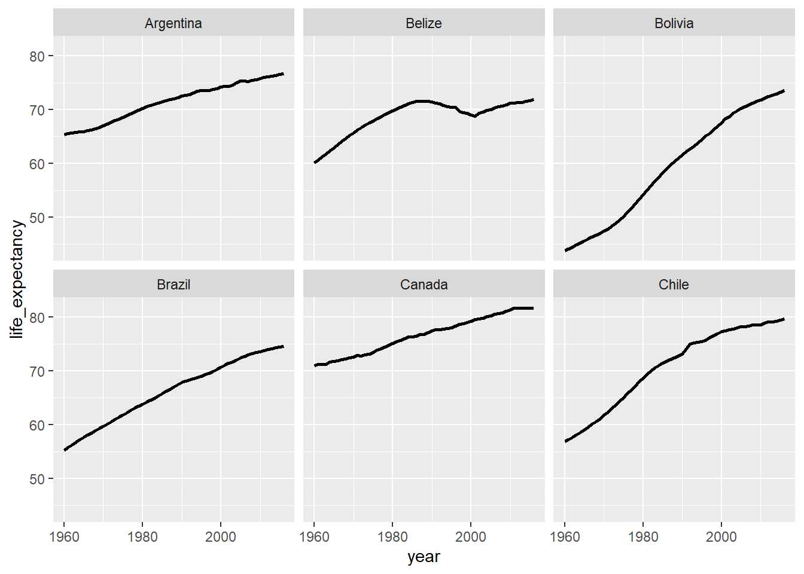
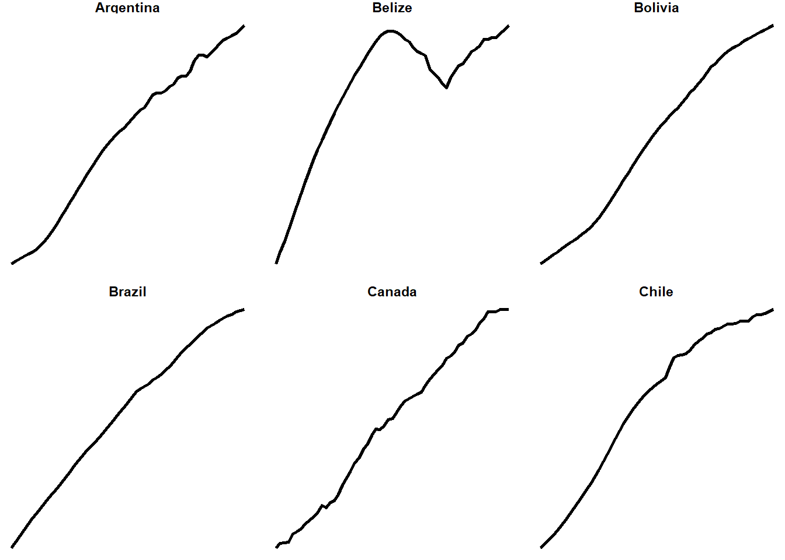
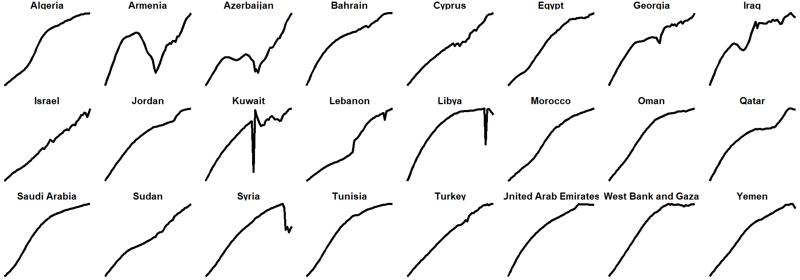
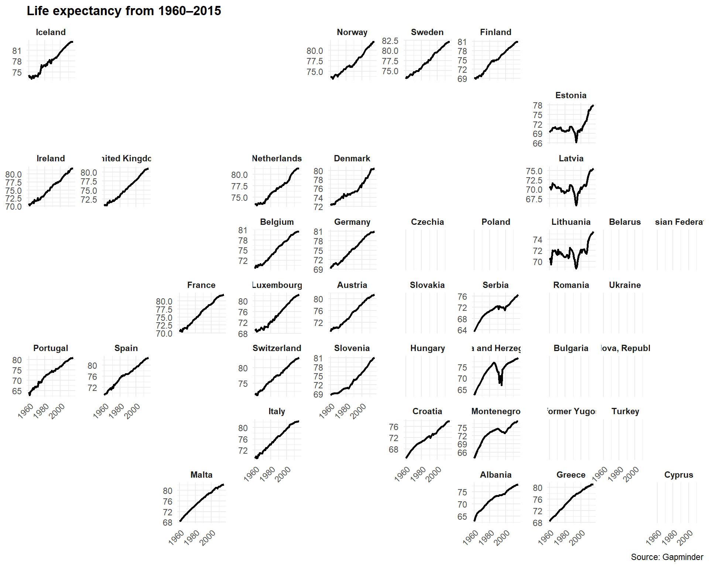
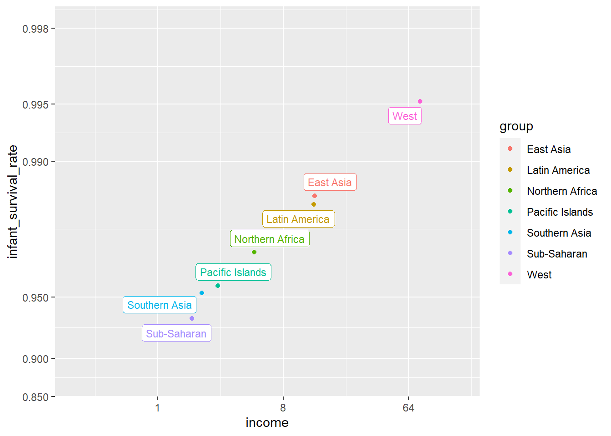
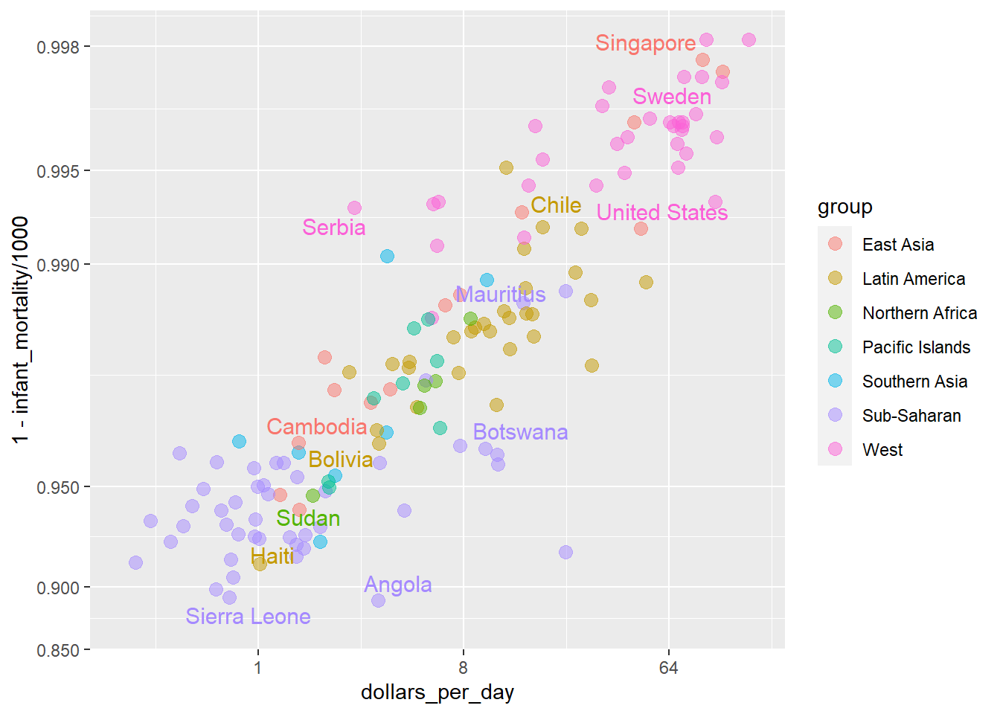

library(tidyverse)
library(dslabs)
library(ggrepel)
library(ggthemes)
gapminder = dslabs::gapminder %>% as_tibble()Visualization 2
Extra Visualization
Small multiples
First we can make some small multiples plots and show life expectancy over time for a handful of countries. We’ll make a list of some countries chosen at random while I scrolled through the data, and then filter our data to include only those rows. We then plot life expectancy, faceting by country.
life_expectancy_small <- gapminder %>%
filter(country %in% c("Argentina", "Bolivia", "Brazil",
"Belize", "Canada", "Chile"))
ggplot(data = life_expectancy_small,
mapping = aes(x = year, y = life_expectancy)) +
geom_line(size = 1) +
facet_wrap(vars(country))
Small multiples! That’s all we need to do.
We can do some fancier things, though. We can make this plot hyper minimalist with a theme:
ggplot(data = life_expectancy_small,
mapping = aes(x = year, y = life_expectancy)) +
geom_line(size = 1) +
facet_wrap(vars(country), scales = "free_y") +
theme_void() +
theme(strip.text = element_text(face = "bold"))
We can do a whole part of a continent (poor Syria 😿)
life_expectancy_mena <- gapminder %>%
filter(region == "Northern Africa" | region == "Western Asia")
ggplot(data = life_expectancy_mena,
mapping = aes(x = year, y = life_expectancy)) +
geom_line(size = 1) +
facet_wrap(vars(country), scales = "free_y", nrow = 3) +
theme_void() +
theme(strip.text = element_text(face = "bold"))
We can use the geofacet package to arrange these facets by geography:
library(geofacet)
life_expectancy_eu <- gapminder %>%
filter(region== 'Western Europe' | region=='Northern Europe' | region=='Southern Europe')
ggplot(life_expectancy_eu, aes(x = year, y = life_expectancy)) +
geom_line(size = 1) +
facet_geo(vars(country), grid = "europe_countries_grid1", scales = "free_y") +
labs(x = NULL, y = NULL, title = "Life expectancy from 1960–2015",
caption = "Source: Gapminder") +
theme_minimal() +
theme(strip.text = element_text(face = "bold"),
plot.title = element_text(face = "bold"),
axis.text.x = element_text(angle = 45, hjust = 1))
Neat!
The ecological fallacy and importance of showing the data
Throughout this section, we have been comparing regions of the world. We have seen that, on average, some regions do better than others. In this section, we focus on describing the importance of variability within the groups when examining the relationship between a country’s infant mortality rates and average income.
We define a few more regions and compare the averages across regions:

The relationship between these two variables is almost perfectly linear and the graph shows a dramatic difference. While in the West less than 0.5% of infants die, in Sub-Saharan Africa the rate is higher than 6%!
Note that the plot uses a new transformation, the logit transformation.
Logit transformation
The logit transformation for a proportion or rate \(p\) is defined as:
\[f(p) = \log \left( \frac{p}{1-p} \right)\]
When \(p\) is a proportion or probability, the quantity that is being logged, \(p/(1-p)\), is called the odds. In this case \(p\) is the proportion of infants that survived. The odds tell us how many more infants are expected to survive than to die. The log transformation makes this symmetric. If the rates are the same, then the log odds is 0. Fold increases or decreases turn into positive and negative increments, respectively.
This scale is useful when we want to highlight differences near 0 or 1. For survival rates this is important because a survival rate of 90% is unacceptable, while a survival of 99% is relatively good. We would much prefer a survival rate closer to 99.9%. We want our scale to highlight these difference and the logit does this. Note that 99.9/0.1 is about 10 times bigger than 99/1 which is about 10 times larger than 90/10. By using the log, these fold changes turn into constant increases.
Show the data
Now, back to our plot. Based on the plot above, do we conclude that a country with a low income is destined to have low survival rate? Do we conclude that survival rates in Sub-Saharan Africa are all lower than in Southern Asia, which in turn are lower than in the Pacific Islands, and so on?
Jumping to this conclusion based on a plot showing averages is referred to as the ecological fallacy. The almost perfect relationship between survival rates and income is only observed for the averages at the region level. Once we show all the data, we see a somewhat more complicated story:

Specifically, we see that there is a large amount of variability. We see that countries from the same regions can be quite different and that countries with the same income can have different survival rates. For example, while on average Sub-Saharan Africa had the worse health and economic outcomes, there is wide variability within that group. Mauritius and Botswana are doing better than Angola and Sierra Leone, with Mauritius comparable to Western countries.